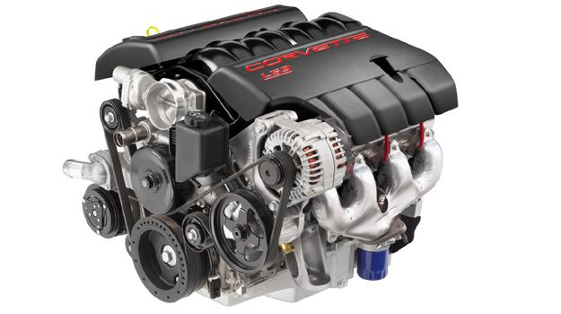

Problema 1: No arranca
Cuando tu auto no arranca o de la nada se para en el medio de una avenida entre la lluvia y el tráfico de la hora pico, la causa más probable puede ser una batería o un alternador en mal estado. ¡Que terrible es girar la llave y darte cuenta que no enciende.
En este caso el mejor remedio es la prevención. Recuerda que las baterías tienen un tiempo de vida limitado. Dependiendo del uso, pueden llegar a durar hasta cinco años. Por esta razón es conveniente acudir con el eléctrico de vez en cuando para que cheque el estado del acumulador y la forma como está resguardando la energía.
Problema 2: Problemas de alternador
El alternador es el componente que mantiene tu batería estable y cargada. Si tienes problemas con este elemento, tu auto no acelerará de forma adecuada. Al igual que en el paso anterior, es conveniente revisarlo de vez en cuando para verificar su estado general.

Problema 3:Bujías
Las bujías tienen un problema de uso/desgaste. Mientras más utilices tu auto, la posibilidad de que las bujías fallen aumenta significativamente. Un problema de bujías puede ocasionar que tu auto avance a una velocidad muy por debajo de su capacidad, consuma más gasolina de lo normal, y produzca ruidos muy raros.
Para prevenir estas desagradables situaciones, procura realizarle el servicio en tiempo y forma a tu auto. Incluyendo en el mismo el reemplazo regular de tus bujías.
Problema 4: Fuga del radiador
Si tu aire acondicionado comienza a fallar, y tu auto deja una mancha de anticongelante donde lo dejas estacionado, no creas que está marcando su territorio, lo más probable es que el radiador esté presentado una fuga.
¡No te asustes! Únicamente tienes que revisar mangueras, conectores y abrazaderas para asegurarte que se encuentran en el lugar correcto y en el estado óptimo. Si se encuentran daños: Reemplaza inmediatamente.
De igual forma, el mantenimiento constante del anticongelante beneficiara la limpieza y buen estado de tu radiador.

Problema 5: Fuga de aceite
La principal evidencia de que tu auto está padeciendo de una fuga de aceite son las terribles manchas negras que puede ir dejando a su paso o en el lugar de su estacionamiento.
Inicialmente comienzan siendo pequeñas y poco escandalosas, pero no tardan en convertirse en incontrolables. Existe la posibilidad de que el filtro de aceite no haya sido bien colocado en el último servicio, algún problema en la junta del cárter o algún empaque del motor.
En este caso no hay de otra, debes ir de inmediato al mecánico y corregir el problema. Para evitarlo, lo mejor son las revisiones continuas y, en caso de llevar tu auto al servicio, verificar que coloquen todo como debe ser.
Problema 6:Llantas ponchadas
El coco de todos los que somos poco versados en la mecánica automotriz o de las bellas damas. La ponchadura de llantas se presenta cuando objetos agudos tienen contacto con ellas, o cuando han tenido ya un uso y desgaste prolongado sobre terrenos difíciles. Para prevenir su ponchadura, debes ser cuidadodoso sobre las rutas por donde llevas tu auto.
Evita en lo posible pasar por muchos charcos en época de lluvias ya que es en éstos donde los clavos u objetos de metal filosos nadan sin control esperando el neumático adecuado.
Presta especial atención al rodaje de las llantas cuando circules por calles estrechas y con coches o construcciones a los lados, los cuales ayudarán a rebotar el sonido. Baja el volumen de la música y baja las ventanillas. El rodaje debe ser silenciosos, si detectas un “tac…tac…tac”, puede ser síntoma de que la llanta trae un objeto clavado.
En cuanto te sea posible, detente y revisa el neumático. Puede ser una simple piedra o un clavo que con el paso del tiempo permitirá la fuga completa de aire.
Como pudiste darte cuenta, todos los problemas pueden ser solucionados si mantienes constante atención en tu auto y le realizas sus servicios de mantenimiento correspondientes en el momento indicado. De igual forma, es de suma importancia que entiendas los términos del fabricante de tu auto y el proveedor de su seguro con respecto a reparaciones y mantenimiento.